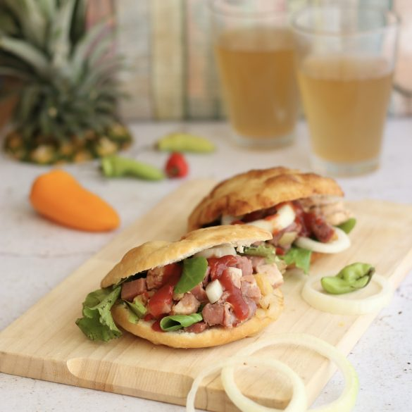

Le Bokit
Véritable pilier de la culture de rue guadeloupéenne, le bokit est un sandwich unique au monde. Sa particularité repose sur son pain fait d'une pâte fine sans levain, frite directement dans une huile bien chaude.
Doré à souhait, croustillant à l’extérieur et d'un moelleux incomparable à l’intérieur, il se décline à l'infini en se garnissant de morue déchiquetée, de poulet boucané, de thon ou de jambon-fromage, toujours relevé d’une pointe de piment antillais.
L'histoire et le secret du Bokit
Le bokit tire ses origines du milieu du XIXᵉ siècle, juste après l'abolition de l'esclavage. Les travailleurs les plus pauvres ne possédant pas de four inventèrent une alternative économique en faisant frire une simple galette d'eau, de farine et de sel dans une casserole d'huile. Cette technique s'inspire du "johnny cake" des îles anglophones voisines.
Le secret absolu d'un bon bokit réside dans la maîtrise de sa friture. La pâte doit gonfler instantanément à la cuisson pour créer une poche d'air naturelle, idéale pour y glisser la garniture, sans pour autant absorber trop de matière grasse.
Aujourd'hui, la garniture traditionnelle reste la chiquetaille de morue (morue séchée, dessalée, émiettée et assaisonnée à l'huile, à l'ail et aux piments pays), mais les versions modernes au poulet oignons ou "complet" (jambon, fromage, œuf) font fureur auprès des locaux et des voyageurs dès la tombée de la nuit.